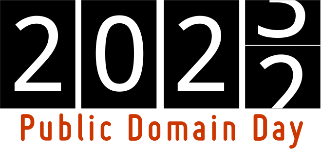

Las leyes de derechos de autor (copyright) otorgan a los creadores de las obras culturales su control absoluto durante un número de años. Pasado ese plazo, las obras culturales pasan al denominado dominio público, en el que quedan a libre disposición de todo el mundo.
La constitución americana de 1776 otorgó al Congreso la posibilidad de regular los derechos de autor:
The Congress shall have power to promote the progress of science and useful arts, by securing for limited times to authors and inventors the exclusive right to their respective writings and discoveries
La primera ley de derechos de autor de Estados Unidos, publicada en 1790, establecía que las obras culturales pasarían a dominio público a los 14 años desde su publicación, plazo que se podía renovar por 14 años más.
A lo largo del siglo XX, los tenedores de derechos de autor consiguieron ir alargando el plazo de protección de sus derechos a expensas del dominio público en todo el mundo y particularmente en Estados Unidos.
Tras la confirmación de la ley Bono por parte del Tribunal Supremo, la reacción a esta extensión abusiva de los derechos de autor impulsó la creación de sistemas alternativos como Creative Commons, cada vez más extendidos, que propone esquemas más flexibles de protección de los derechos de autor y facilita la creación, conservación y reutilización de las obras.